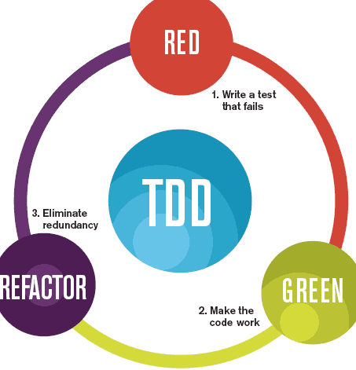

Test Driven Development
7: TDD & ViewPager


Testing is now considered an integral part of the programmers job. TDD is a technique that promotes reasonable simple unit test as precursor to implementation, significantly enhancing the robustness of the classes under test.
TDD in Play
The Play framework has very specific test support - facilitated via a variant of the JUnit libraries. This enables play applications to be launched in 'test' mode, and specific simple tests executed on the application classes.
Blog Model

The focus on the tests for the moment is the Model classes only. In the lab you will attempt to build tests for the WitPress app. Here we review this model in this app in preparation the lab.
ViewPager

In order to support 'swipe' between views at a specific level, we incorporate ViewLager support into the class.
TDD-01

Explore the Unit test features of Play by writing some tests to verify the current behavior of the User and Message classes for the spacebook app.
MyRent-08

Introduce a Google Map including necessary supporting resources such as Google Play Services Library and a personal API key. Additionally, support a landscape layout, validation of geolocation input, immediate mirroring any changes in this input in the view title and support for smaller small factor devices.